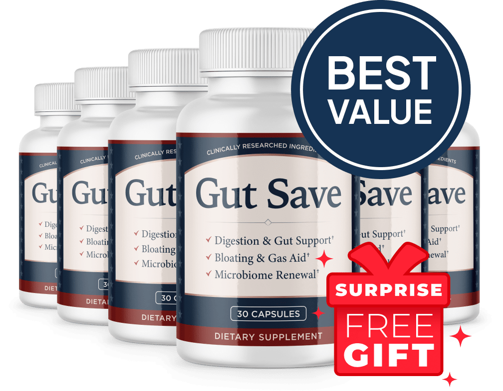

What Is GutSave And How Does It Work?
You already eat "carefully." You still feel like you swallowed a balloon by 3pm.
That contradiction is where most people quietly start blaming themselves — as if the bloating were a character flaw instead of something happening below the surface, out of view. It probably isn't willpower. It's friction.
Picture a water slide that used to be smooth and fast. Nothing dramatic ever happened to it — just years of ordinary use. But somewhere along the way, tiny rough patches showed up on the surface. Not enough to stop anyone from going down. Just enough that the ride gets slower near the bottom, bumpier, less predictable. Call it gut friction — the everyday rough patches that build up along the lining that's supposed to let things move through evenly. The slide still works. It's just dragging.
GutSave is a once-daily capsule built around a proprietary blend, formulated to work on that drag directly — supporting the gut lining and the balance of your microbiome instead of asking you to white-knuckle another restrictive diet.
That distinction is the whole approach. This isn't a fiber shake that adds bulk and hopes for the best, and it isn't a list of foods you're no longer allowed to enjoy. It targets the friction itself, and the theory is straightforward: once things are moving through a smoother, better-supported lining, what the drag was causing — the bloat, the unpredictable timing, the stomach that never quite feels "done" — has less to hold onto.
Most users don't describe a dramatic before-and-after. They describe an absence: the waistband that stopped announcing itself by early afternoon, the trip that didn't need to be planned around a bathroom. The manufacturer positions the six-bottle routine as the real protocol here, which tracks — a surface that picked up wear gradually isn't going to smooth out overnight.
GutSave Ingredients
Ten ingredients, one job: ease the friction and let digestion move the way it's supposed to.
- Fish Collagen Peptides: A structural protein traditionally included to support the integrity of the gut lining itself — the surface everything else in this list is working to smooth out.
- Organic Lion's Mane Powder: Best known for cognitive and nerve support, and increasingly discussed for its role along the gut-brain axis, where digestive comfort and mental clarity turn out to be more connected than most people assume.
- Papaya Seed Powder: A source of papain, an enzyme with a long history of traditional use in helping the body break down protein more completely — less left over to sit and ferment.
- Black Cumin Seed Extract (Nigella sativa): Carries a centuries-old reputation for calming inflammation, included here for general digestive comfort rather than any single dramatic effect.
- Colostrum Powder: Rich in the kind of compounds typically associated with supporting a resilient gut lining, borrowed from the same substance that gives every mammal's digestive system its first line of defense.
- Lactobacillus Paracasei: A probiotic strain included to help rebalance the microbial population your digestion actually depends on.
- Lactobacillus Buchneri: Another strain in the blend's probiotic lineup, chosen to broaden the diversity of the microbiome rather than lean on a single species.
- Lactobacillus Brevis: Rounds out the Lactobacillus family in the formula, supporting the same goal of a more balanced gut environment.
- Lactobacillus Hilgardi: A less common strain that adds further diversity to the probiotic blend, on the theory that variety matters as much as volume.
- Bifidobacterium Lactis BL-04: One of the more thoroughly studied probiotic strains available, frequently associated with digestive comfort and more predictable regularity.
Individually, each ingredient has a defined lane — structure, enzymes, calm, diversity, balance. Together, the blend is built to address the friction from more than one angle instead of leaning on a single mechanism and hoping it's enough.
GutSave Side Effects
Here's what tends to surprise people: there isn't much to brace for.
Every ingredient in GutSave is something the body already recognizes — a protein, a seed, a probiotic strain, a plant extract. These are naturally occurring ingredients included at supportive levels, not a laxative forcing a reaction or a stimulant pushing things along artificially. That's usually where digestive products run into trouble, and it's not the category GutSave sits in.
In line with that, the formula is described by the manufacturer as free of stimulants and non-GMO, built for a daily routine rather than an occasional jolt.
As with any dietary supplement, check with a healthcare professional first if you're pregnant, nursing, taking medication, or managing an existing medical condition.
GutSave Dosage
One capsule. One large glass of water. Ideally in the morning.
Each bottle holds a 30-day supply, and the label calls for one capsule daily. No titration schedule, no timing it precisely around meals, nothing complicated enough to abandon after a busy week — which matters, because a routine you can't stick to doesn't get the chance to work.
Consistency is what actually smooths out friction, not intensity. Rough patches that built up gradually over time don't disappear after one strong dose; they ease with steady, daily support over weeks. That's likely why the manufacturer frames its real protocol around the six-bottle option rather than a single trial bottle — the smaller two-bottle order exists, but it's priced as the starting point, not the intended course.
Whichever size you land on, don't exceed the labeled dose. Easing friction isn't a race, and doubling up doesn't smooth it out twice as fast.
GutSave – Refund Policy
Every order is covered by a 60-day money-back guarantee.
That window is worth sitting with for a second. Sixty days is long enough to run the six-bottle protocol for the better part of its course and still have room to judge honestly whether the bloating, the timing, the "never quite done" feeling actually shifted — a company chasing a quick sale doesn't usually offer that much rope.
One detail worth knowing upfront: GutSave's guarantee asks that you return all the bottles from your order, empty or not, along with the packing slip, to receive a full refund. It's a straightforward condition, not a hidden one, but it's worth keeping the bottles and your paperwork until you've decided the product is working for you.
Full terms and how to request a refund are listed on the official GutSave website.
GutSave Customer Reviews
 Diane Forsythe
Boise, ID
Verified Purchase – 6 Bottles
Diane Forsythe
Boise, ID
Verified Purchase – 6 Bottles
"I used to keep a cardigan tied around my waist by 2pm, every single day, just to hide how tight my waistband had gotten. It sounds small until you realize you've built your whole wardrobe around it. About five weeks into GutSave I noticed I'd stopped reaching for the cardigan. I'm not exaggerating when I say I checked the mirror twice because I didn't believe it."
 James Alcott
Tulsa, OK
Verified Purchase – 3 Bottles
James Alcott
Tulsa, OK
Verified Purchase – 3 Bottles
"I'd map out road trips around gas stations without ever admitting that's what I was doing. My wife caught on before I did. Somewhere around the six-week mark she pointed out I hadn't asked 'how far to the next exit' in a while, and she was right — mornings just started working the way they're supposed to, at the same time, without the guessing."
 Margaret Sowell
Eugene, OR
Verified Purchase – 6 Bottles
Margaret Sowell
Eugene, OR
Verified Purchase – 6 Bottles
"I'd tried two other gut products before this one, and both worked for maybe two weeks before I was right back where I started. I almost didn't order GutSave because of that. Two months in, though, meals stopped leaving me feeling like I still owed my stomach something. That 'not quite done' feeling I'd had for years just isn't there anymore, and that's the part that actually convinced me."
GutSave – Where To Buy
Where you buy this matters more than people assume.
GutSave isn't sold through Amazon, eBay, or Walmart, though listings that look official sometimes turn up there. With a proprietary blend like this one, there's no way to verify from a marketplace photo whether what's inside the bottle matches what's on the label, or how it was stored before it reached you.
There's a second cost to buying around the official channel: the 60-day guarantee, with its specific return conditions, only exists for orders placed through it. A marketplace purchase never reaches the manufacturer, so the safety net you thought you had was never actually attached to that transaction. Support works the same way — there's no one to call.
Buying direct protects the formula, the guarantee, and your ability to actually reach someone if you need to.
To ensure you're getting the authentic product, most users choose to visit the official website directly.
Is GutSave A Scam?
No — and the clearest evidence is what the page doesn't do.
This category is crowded with products promising a total digestive overhaul in days, no lifestyle changes required. GutSave doesn't lean on that. It frames its real protocol around a multi-bottle routine, which is the commercially inconvenient answer and also the honest one, since friction that built up gradually isn't going to smooth out in a week.
The rest of the picture holds up under scrutiny: ten named ingredients rather than a vague "proprietary digestive complex," a formula built from recognizable proteins, enzymes, and studied probiotic strains, and a 60-day guarantee — with a plainly stated return condition, not a buried one — that gives you real time to judge results before committing further.
Where it stops being the answer for everyone: if you're dealing with persistent or severe digestive symptoms, that calls for proper medical evaluation — no capsule replaces that, and GutSave doesn't claim to.
But if what you're actually dealing with is gut friction — the waistband that gets tight by mid-afternoon, the outing you quietly plan around the nearest bathroom, the meal that never quite feels finished — the math here is simple. Try it for the sixty days you're guaranteed. If nothing shifts, you ask for the refund and the only thing you're out is the wait.
As with any dietary supplement, check with a healthcare professional first if you have an existing medical condition or take prescription medication.
For those who want to verify product details or check current availability, the official GutSave website remains the safest and most reliable option.
